This road sign means:
Answer: B. Come to a complete stop before proceeding
Why: A STOP sign (red octagon) requires every driver to come to a complete halt at the stop line, check that the way is clear, then proceed.
Independent Nigerian driving study
Read all 120 questions from our practice bank, with the correct answers, road sign images and explanations. Use the topics below to focus your revision, then test what you have learned in the interactive mock quiz.
This is an independent study resource, not an official VIO examination paper. It is not affiliated with or endorsed by FRSC or VIO. Our quiz’s 20/40 questions, 60 seconds per question and 70% pass threshold are practice settings. Confirm actual assessment requirements with your driving school or VIO office.
Recognise warning, mandatory, prohibitory and information signs. Look at each sign before reading its answer.
Answer: B. Come to a complete stop before proceeding
Why: A STOP sign (red octagon) requires every driver to come to a complete halt at the stop line, check that the way is clear, then proceed.
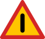
Answer: C. A warning sign
Why: Warning signs are triangular with a red border (point up). Circular red-bordered signs are regulatory (prohibitive); blue rectangles are informative; blue circles are mandatory.
Answer: B. No entry for motor vehicles
Why: A red circle with a vehicle symbol crossed out prohibits motor vehicles from entering that road.
Answer: C. Mandatory — you must turn right
Why: Blue circular signs give mandatory (compulsory) instructions. A white right-arrow inside one means drivers must turn right.
Answer: A. Other danger ahead — proceed with caution
Why: The exclamation-mark warning triangle is a general 'other danger' sign, warning of a hazard not covered by other specific signs.
Answer: B. No parking
Why: A blue circle with a red border and ONE diagonal red line means 'No Parking'. Two diagonal lines crossed (X) would mean 'No Stopping' (clearway).
Answer: C. Maximum speed 50 km/h
Why: A red circle with a number shows the MAXIMUM speed limit in km/h. You must not exceed this speed on that road.
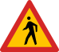
Answer: C. Pedestrian crossing ahead
Why: A red warning triangle with a walking pedestrian means a pedestrian crossing is ahead. Slow down and be prepared to stop.
Answer: C. No U-turn
Why: A red circle containing a U-shaped arrow with a diagonal red line prohibits making a U-turn at that location.
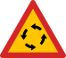
Answer: A. Roundabout ahead — give way to traffic already on it
Why: A blue circle with three arrows circulating anti-clockwise means 'Roundabout Ahead'. Give way to vehicles already on the roundabout (approaching from your left in Nigeria).
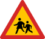
Answer: A. School / children crossing ahead — slow down
Why: Per Highway Code Section B.II (Warning Signs), a red triangle with adult and child figures warns of a school or area where children are likely to cross. Slow down and be ready to stop.
Answer: B. Falling rocks ahead
Why: Per Highway Code Section B.II (Warning Signs), this triangle warns of falling rocks from a hillside or cliff. Reduce speed and watch for debris on the carriageway.
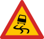
Answer: A. Slippery road surface — drive with caution
Why: Per Highway Code Section B.II, the slippery-surface warning triangle (car with skid marks) tells you the road may be slippery — wet, oily, or covered in loose material. Reduce speed and avoid sudden braking.
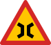
Answer: C. Narrow bridge ahead
Why: Per Highway Code Section B.II, the narrow-bridge warning triangle (two arcs curving inward) tells you the road narrows for a bridge. Slow down — only one vehicle may be able to cross at a time.
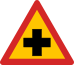
Answer: C. Cross-road ahead
Why: Per Highway Code Section B.II, a red triangle containing a black X warns of a cross-road ahead. Slow down and check both sides for traffic on the intersecting road.
Answer: B. Pass to the left of the obstruction or divider
Why: Per Highway Code Section B.III (Mandatory Signs), a blue circle with a down-left arrow means you MUST pass to the LEFT of the traffic island, obstruction or divider ahead.
Answer: B. One-way traffic in the direction of the arrow
Why: Per Highway Code Section B.III, a blue rectangular sign with a single white arrow indicates a one-way street — traffic flows only in the direction shown.
Answer: B. Compulsory cycle track — cyclists must use it
Why: Per Highway Code Section B.III, a blue circle with a bicycle indicates a compulsory cycle track. Where this sign is shown, cyclists must use the designated cycle path.
Answer: B. Hospital / first-aid station
Why: Per Highway Code Section B.IV (Information Signs), the hospital sign indicates a hospital or first-aid station nearby. Drive carefully and avoid sounding the horn within the silent zone around it.
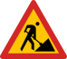
Answer: B. Road works ahead — slow down and follow temporary signs
Why: Per Highway Code Section B.II (Warning Signs), the road-works warning triangle (worker with shovel) tells you there are construction or repair works ahead. Slow down, watch for workers, and follow any temporary signs or flag-person directions.
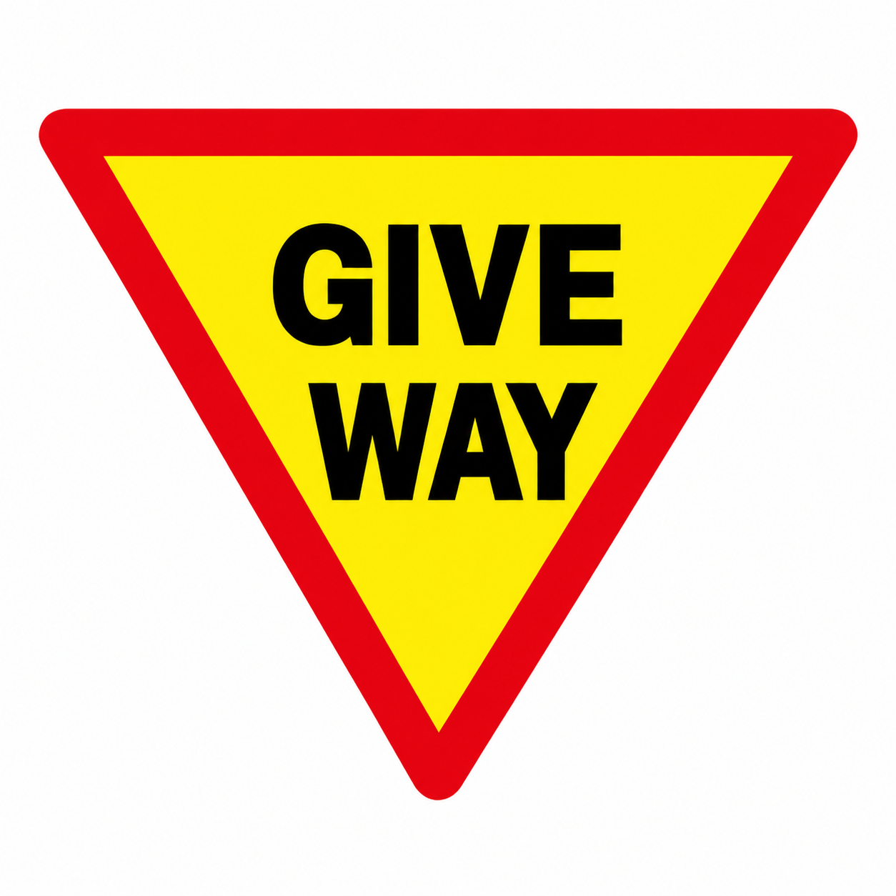
Answer: B. Give way to traffic on the road you are joining
Why: Give Way requires you to yield to traffic on the road you are joining. Stop if needed; unlike a STOP sign, it does not require a complete stop when the way is clear.
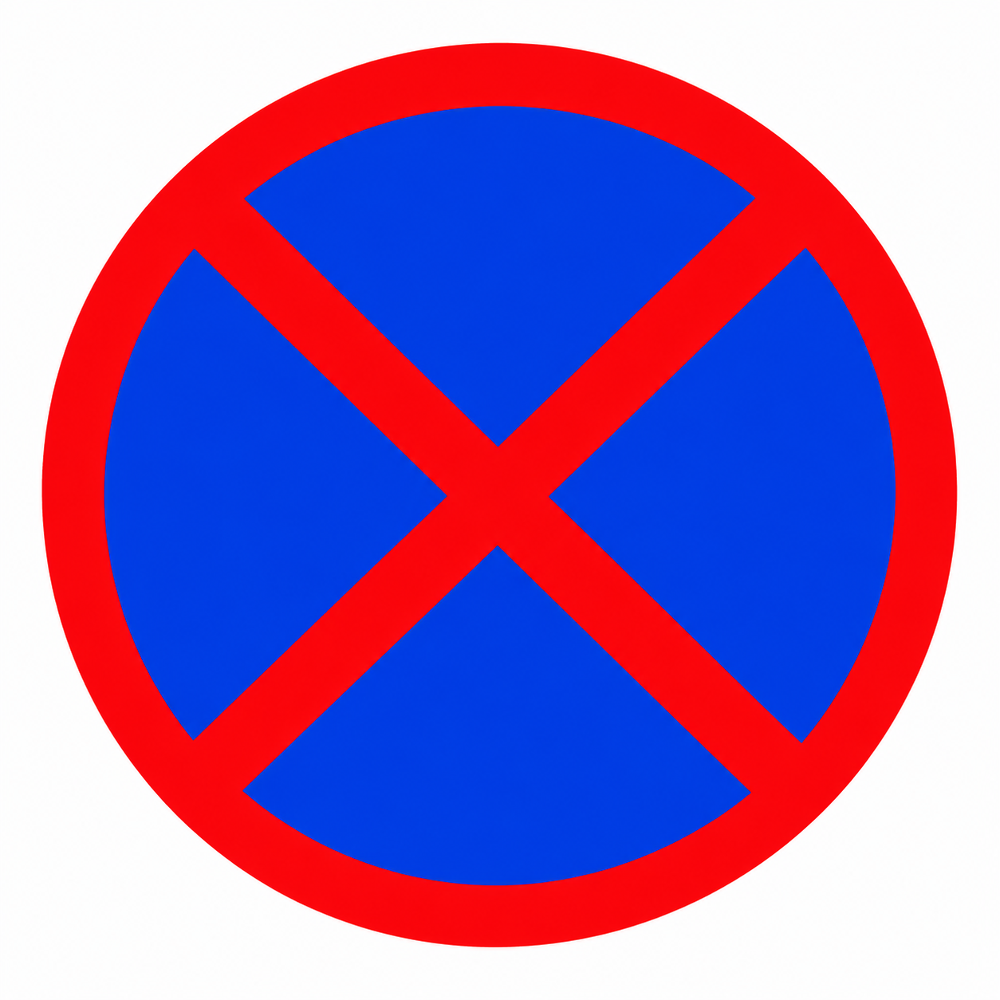
Answer: D. No stopping or parking
Why: The red X means No Stopping. The single diagonal used for No Parking is different. A traffic instruction or an emergency may still require you to stop.
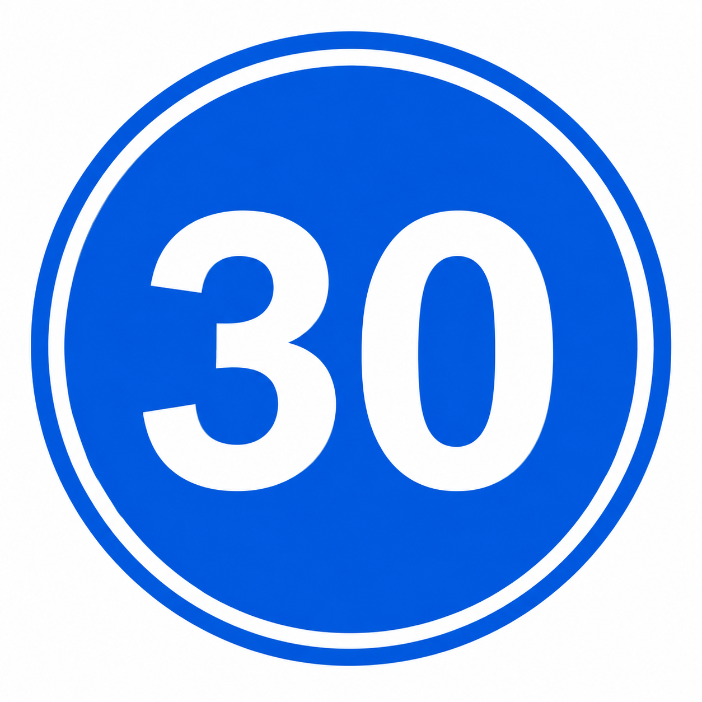
Answer: A. A minimum speed of 30 km/h when conditions permit
Why: A number in a blue mandatory circle specifies a minimum speed; a red-bordered speed sign specifies a maximum. The FRSC chart identifies this blue 30 sign as a minimum-speed sign. Never maintain a speed that is unsafe for the conditions.
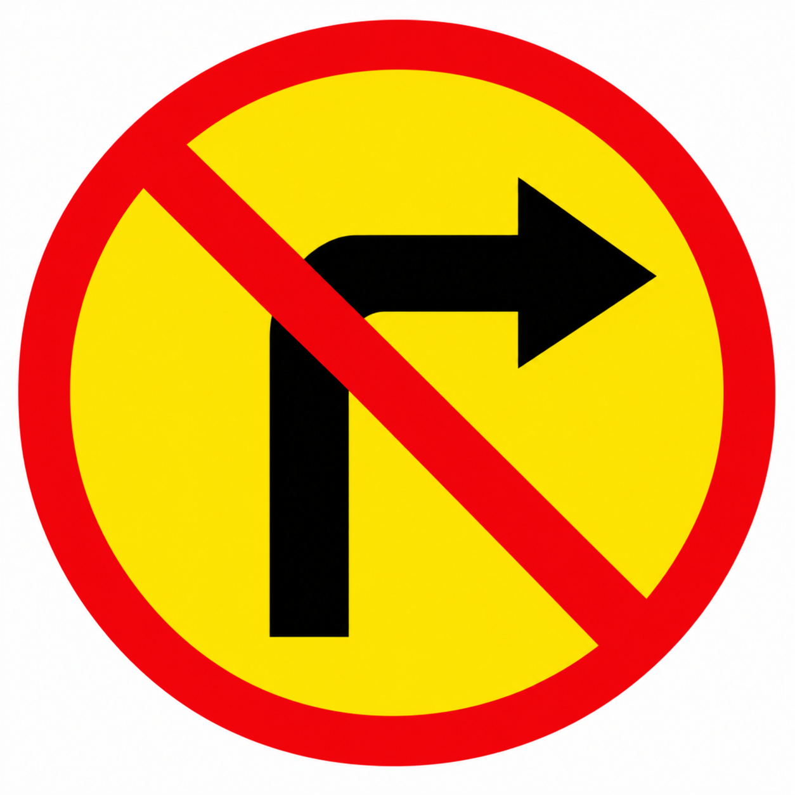
Answer: C. A right turn at the junction
Why: The crossed-out right-turn arrow prohibits turning right. It does not require you to turn right: compulsory directions use a blue sign without the red prohibition bar.
Answer: B. An airport
Why: The aeroplane pictogram identifies an airport. The pointed direction panel guides you towards it; it is an information sign, not a warning that aircraft will land on the road.
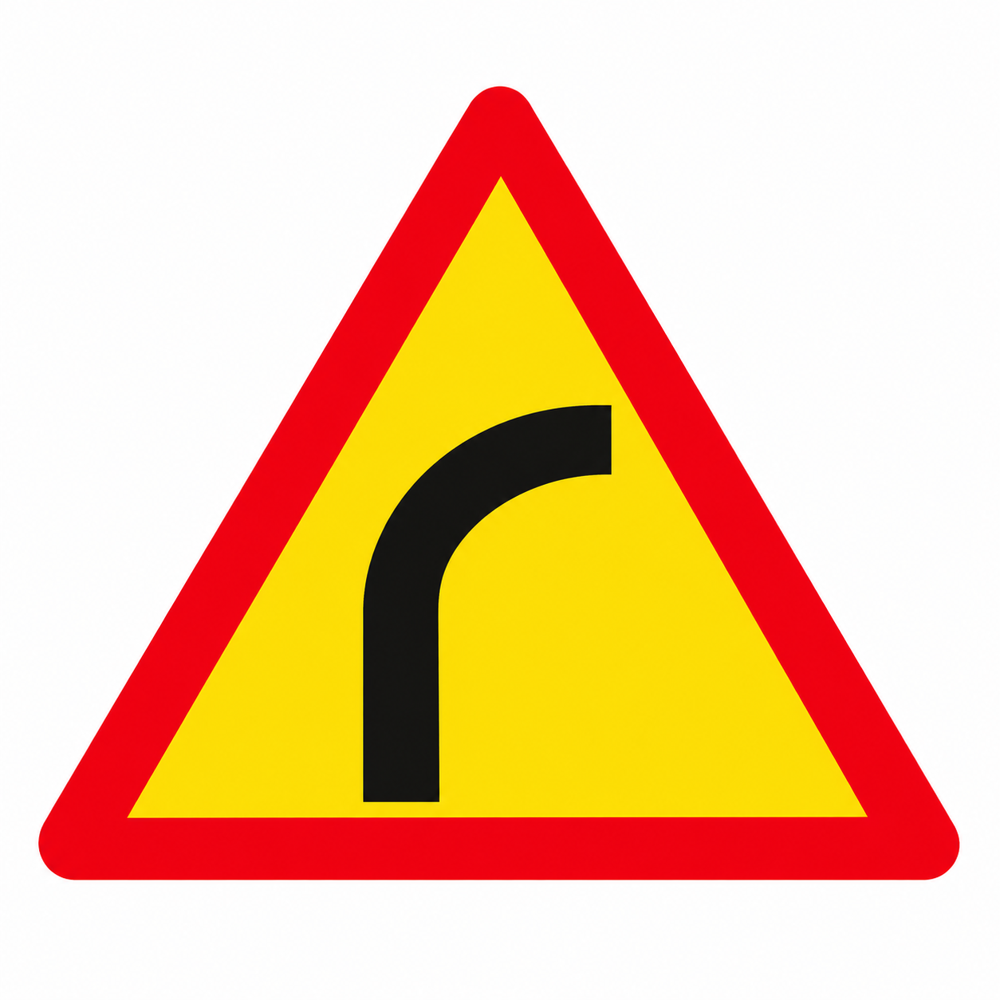
Answer: B. A dangerous bend to the right ahead
Why: The warning triangle shows a dangerous bend to the right. Reduce speed before the bend and stay in your lane; it warns of a curve rather than ordering a turn.
Sources: FRSC MI-III Compendium 2025, §1.4 sign chart, page 4.
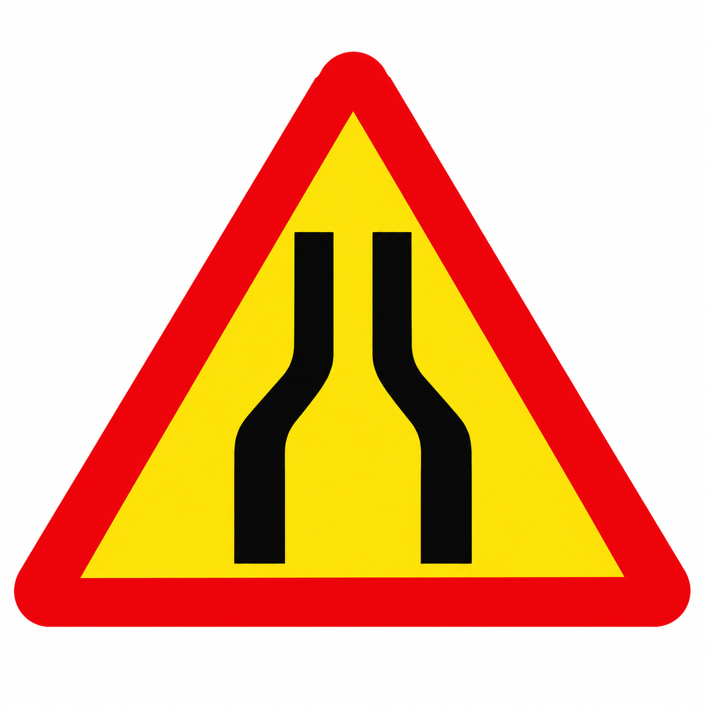
Answer: D. The carriageway narrows ahead
Why: The two converging road edges warn that the carriageway narrows. Expect less road space and adjust your speed and position. This sign does not specifically identify a bridge.
Sources: FRSC MI-III Compendium 2025, §1.4 sign chart, page 4.
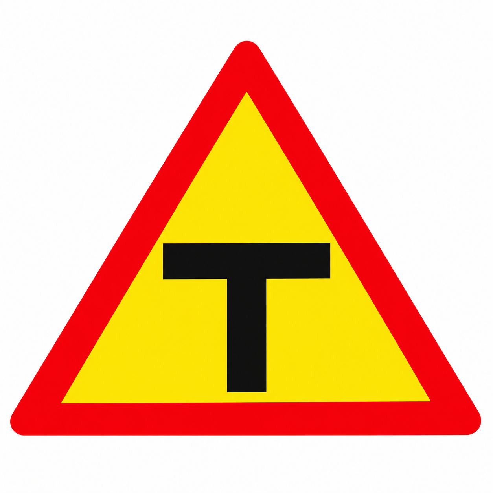
Answer: A. A T-junction ahead
Why: The T shape warns of a junction where two roads meet in the shape of a T. Approach cautiously, check traffic and obey the actual priority signs or signals; the warning sign alone does not grant priority.
Sources: FRSC MI-III Compendium 2025, §1.4 sign chart, page 4.
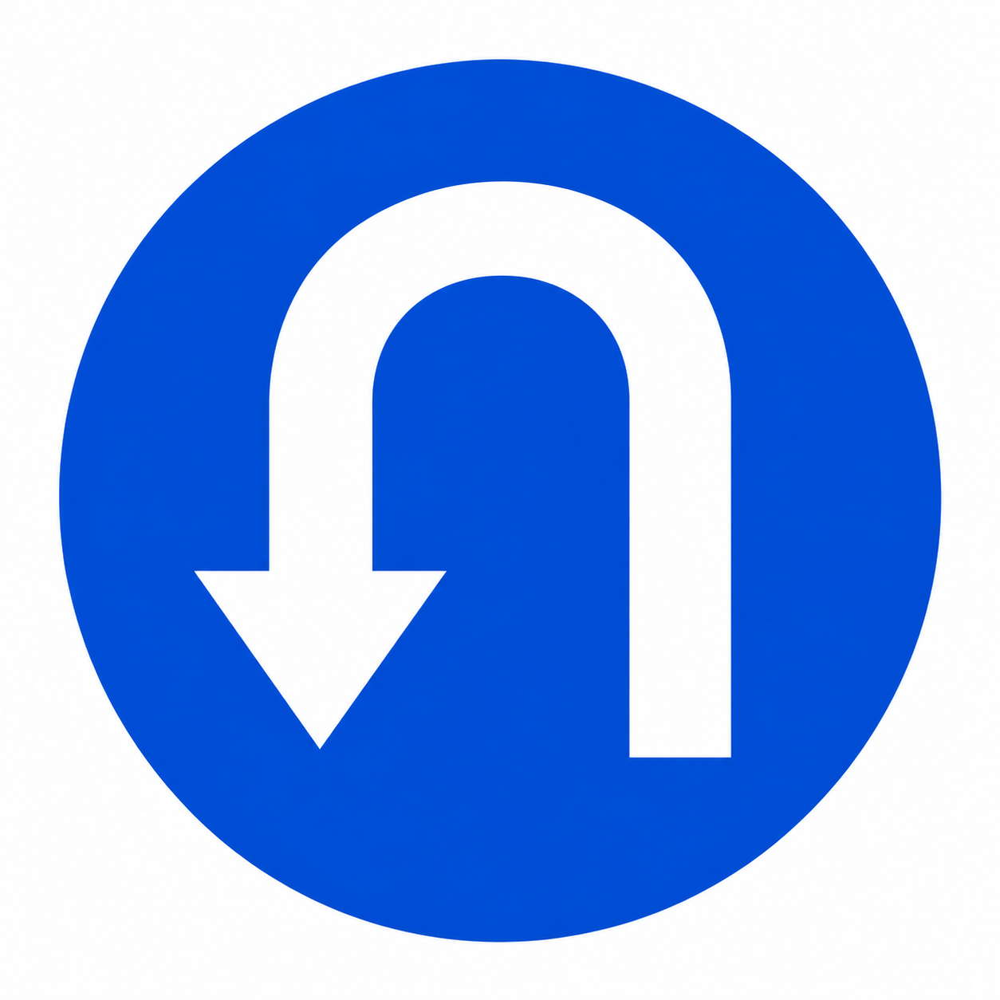
Answer: C. Make a U-turn as directed when safe
Why: FRSC classifies this blue-circle U-turn sign as mandatory: follow the indicated U-turn movement when safe. Its blue background distinguishes it from the yellow, red-bordered No U-turn sign.
Sources: FRSC MI-III Compendium 2025, §1.4 sign chart, page 4.
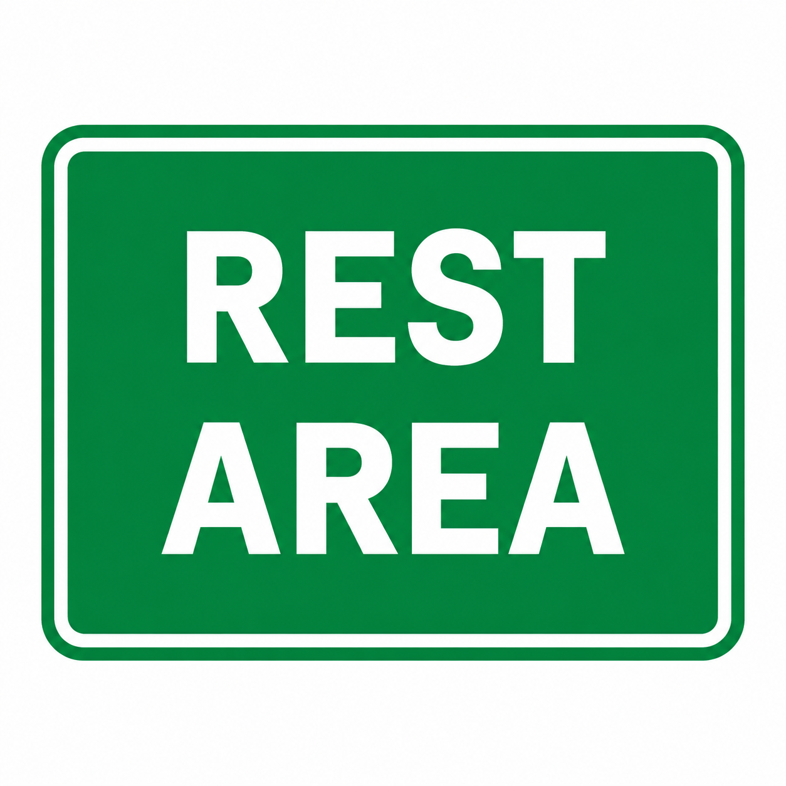
Answer: B. A rest area
Why: The green REST AREA panel is an informative sign identifying a designated rest facility. It helps you find somewhere to take a break; it does not require every vehicle to stop.
Sources: FRSC MI-III Compendium 2025, §1.4 sign chart, page 4.
Review priority, overtaking, speed limits, traffic lights and safe following distances.
Answer: B. Left side
Why: Nigeria drives on the right-hand side of the road, so overtaking is done on the LEFT of the vehicle you are passing.
Answer: B. The driver approaching from the left
Why: At an uncontrolled junction, you must give way to traffic approaching from your right. So the driver on the LEFT gives way.
Answer: B. 50 km/h
Why: FRSC sets the limit at 50 km/h in built-up areas, 80 km/h on highways, and 100 km/h on expressways for cars.
Answer: C. Prohibited — it is a recognised traffic offence (DUP)
Why: Driving Under the Phone (DUP) is an FRSC offence carrying penalty points and a fine. Only properly installed hands-free systems are permitted.
Answer: C. All occupants of the vehicle
Why: Nigerian law requires ALL occupants — front and back seats — to wear seat belts at all times. Failure to do so is the SBV offence.
Answer: B. Stop, unless stopping would be unsafe
Why: Amber means stop. You may only proceed if you are so close that stopping would be dangerous. Amber is NOT a signal to accelerate.
Answer: C. 2 seconds
Why: The 2-second rule: watch the vehicle ahead pass a fixed point, then count '1-thousand, 2-thousand'. You shouldn't reach that point before you finish. Double it in rain, triple it on ice.
Answer: B. Your vehicle has broken down or is a temporary obstruction
Why: Hazard lights warn other road users that your vehicle is stationary or poses a temporary hazard. Never use them while driving normally.
Answer: C. Slow down and stop to let them cross
Why: Pedestrians have the right of way at zebra crossings. Slow down, stop if necessary, and allow them to cross safely before moving off.
Answer: B. Anti-clockwise (counter-clockwise)
Why: Because Nigeria drives on the right, traffic flows anti-clockwise around roundabouts. Give way to traffic already on the roundabout approaching from your left.
Answer: B. I want to turn left
Why: Per Highway Code Section B.VI (Hand Signals), a left arm extended straight out horizontally signals a LEFT turn. Use this when your trafficators have failed.
Answer: C. Right turn
Why: Per Highway Code Section B.VI (Hand Signals), an arm extended with forearm pointing UP signals a RIGHT turn (the driver effectively 'points' right by raising the forearm).
Answer: B. Hospitals, schools and places of worship (silent zones)
Why: Per Highway Code Section B.II (Categories of Road Users — The Motorist), the horn must be used only to warn other road users of your presence. It is prohibited in designated silent zones — hospitals, schools, and places of worship.
Answer: B. Pedestrians, animals, and learner drivers
Why: Per Highway Code Section A.X (Expressway Driving), pedestrians, hawkers, animals, pedal cycles, learner drivers, and motorcycles below a specified capacity are prohibited on expressways. Stopping, loading, and unloading are also banned.
Answer: B. 50 km/h
Why: Per Highway Code Section A.IX (Speed Limits), motorcycles are limited to 50 km/h in built-up areas. Motorcycles under 50cc are not allowed on highways or expressways at all.
Answer: B. 60 km/h
Why: Per Highway Code Section A.IX speed-limit table, tankers and trailers may travel at up to 60 km/h on expressways (50 km/h on highways, 45 km/h in built-up areas).
Answer: B. Stop and wait — do not cross until the lights stop flashing
Why: Per Highway Code Section B.VII (Rail crossing), at an unmanned level crossing the flashing red lights mean a train is approaching. Stop and wait — the lights will go off when it is safe to cross.
Answer: C. About 72 metres
Why: Per Highway Code Section A.XI (Stopping Distance) table, at 80 km/h the overall stopping distance is approximately 72 metres (22 m thinking + 50 m braking). Wet roads and poor brakes increase this significantly.
Answer: B. When the driver in front has signalled a left turn, or in slow-moving queued traffic
Why: Per Highway Code Section A.VIII (Overtaking Rules), the general rule is to overtake on the LEFT. Overtaking on the right is permitted when the driver ahead is signalling a left turn, when you are turning right at a junction, or in slow queueing traffic.
Answer: B. Slow down if necessary to help the overtaking vehicle pass safely
Why: Per Highway Code Section A.VIII (On Being Overtaken), do NOT accelerate when being overtaken. Slow down if necessary so the overtaking driver can pass and return to their lane safely.
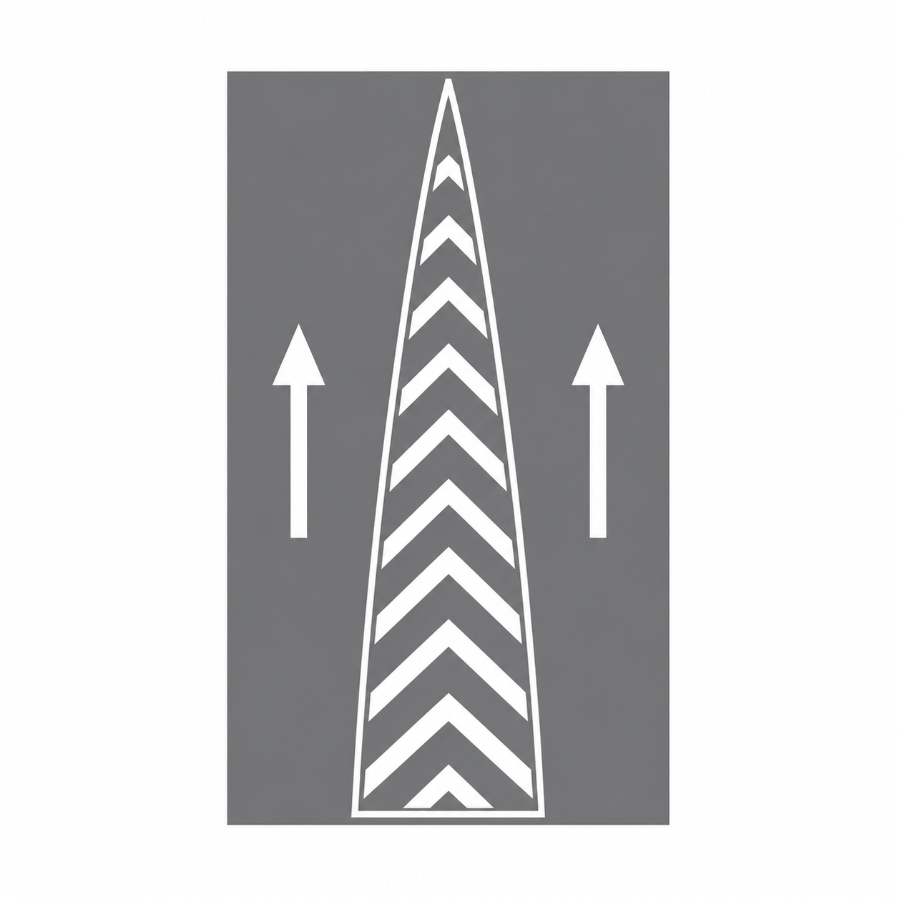
Answer: D. No, you must keep out of the marked area
Why: A continuous boundary around chevron markings means vehicles must not enter that area. Do not treat it as an overtaking lane. A broken boundary has a different rule.
Answer: A. Wait behind the stop line until you can clear the junction
Why: Green permits movement only when the road is clear. Waiting until you can clear the junction prevents you blocking traffic crossing your path. FRSC traffic-signal guidance makes the clear-road condition explicit.
Answer: C. Proceed only in the direction of the green arrow
Why: A green filter arrow authorises only the movement it points to, provided the way is clear. It does not release every movement controlled by the main red signal.
Answer: B. Briefly check over your shoulder towards the intended lane
Why: Mirrors can leave a blind spot. Check mirrors, signal and make a brief shoulder check towards the intended lane before moving when safe. Keep monitoring the road ahead.
Sources: Ontario Ministry of Transportation, Changing positions: blind-spot checks.
Answer: D. Stop safely and follow the officer’s directions
Why: Obey the authorised officer controlling the junction. Do not substitute your own judgement or the actions of other drivers for the officer’s direction. FRSC Fleet Management lists obedience to traffic officers as a safe-driving principle.
Sources: FRSC Fleet Management, safe driving principles, page 25.
Answer: D. When green appears and the way is clear
Why: FRSC states that red and amber together still mean stop. Remain behind the stop line until green shows, then proceed only if it is safe and clear.
Sources: FRSC MI-III Compendium 2025, §1.5 traffic signals, page 5.
Answer: A. Give way to the crossing pedestrians before completing the turn
Why: A green light permits movement only when safe. FRSC specifically instructs drivers turning left or right to take care and give way to pedestrians crossing.
Sources: FRSC MI-III Compendium 2025, §1.5 traffic signals, page 5.
Answer: C. Stay behind until you have a clear, safe view ahead
Why: Do not begin overtaking when the hill hides approaching traffic or the space needed to complete the manoeuvre. Wait until visibility, road markings and traffic conditions make passing safe.
Sources: UK Department for Transport Highway Code, rule 166: visibility before overtaking (general safety).
Answer: B. Make room safely, pulling aside if needed without creating danger
Why: Stay calm, check the ambulance's likely route and make room safely. Pull aside or stop where safe if needed; avoid sudden braking, endangering pedestrians or ignoring signals on your own initiative.
Sources: UK Department for Transport Highway Code, rule 219: emergency vehicles (general safety).
Answer: D. Continue to the next exit and find a safe route back
Why: A missed exit is corrected by continuing to the next exit. Reversing, crossing the divider or driving against expressway traffic creates a serious collision risk.
Sources: UK Department for Transport Highway Code, rule 263: missed exits (general safety).
Study vehicle checks, warning lights, safe responses to breakdowns and passenger protection.
Answer: B. Pull over safely as soon as possible, stop the engine, and check the oil
Why: The red oil light means oil pressure is dangerously low. Continuing to drive can destroy the engine in minutes. Stop and check immediately.
Answer: B. 4 hours, then a 15-minute break
Why: The FRSC Highway Code (Section B.I) requires a 15-minute break after every 4 hours of driving. No single driver should drive more than 10 hours in 24 hours, and journeys exceeding 10 hours require a co-driver.
Answer: B. Pump the brake pedal, shift to a lower gear, and use the handbrake gradually
Why: Pump the brakes to try to restore pressure, downshift to use engine braking, and apply the handbrake gently (never yank it). Avoid turning off the engine — you lose power steering.
Answer: C. Tyres, oil, water/coolant, fuel, lights and brakes
Why: Pre-trip checks cover fluids (oil, coolant, brake fluid), tyres (pressure + tread), lights, wipers, brakes and fuel — often remembered as POWER or FLOWER checks.
Answer: C. Pull over safely, switch off the engine, and let it cool before opening the bonnet
Why: Continuing to drive can warp the cylinder head. Never open a hot radiator cap — the pressurised steam can cause severe burns. Let it cool first.
Answer: B. The alternator or drive belt may be failing — get it checked soon
Why: A lit battery symbol means the charging system is not keeping the battery topped up — usually an alternator or belt issue. The car will eventually stall when the battery drains.
Answer: B. Grip the steering wheel firmly, ease off the accelerator, and slow down gradually
Why: Hard braking or swerving can cause a rollover. Hold the wheel firmly, release the accelerator, let the car slow naturally, then steer gently to a safe stop.
Answer: C. Reduce your speed, increase following distance, and use dipped headlights
Why: Wet roads mean longer stopping distances. Slow down, at least double your following distance, and use DIPPED (low-beam) headlights. High-beams reflect off rain and reduce visibility.
Answer: C. To warn other road users of your presence when necessary
Why: The horn is a safety device, used briefly to alert others to danger. It is prohibited in designated silent zones such as near hospitals, schools, and places of worship.
Answer: B. At least monthly — check pressure, tread, and condition
Why: A spare tyre is useless if it's flat, cracked, or rotten when you need it. Check pressure, tread and sidewall condition at least once a month.
Answer: B. Water, Oil, Fan belt, Tyres
Why: Per Highway Code Section F.I (First Parade), WOFT means Water (radiator), Oil (engine sump), Fan belt (tension and cuts), and Tyres (cuts, pressure, tread). Check these before every journey.
Answer: B. Liquid foam, dry chemical powder, or CO₂
Why: Per Highway Code Section B.IV (Vehicle Fire Prevention), Class B fires (flammable liquids like petrol and grease) require liquid foam, dry chemical powder, or CO₂. NEVER use water on a petrol fire — it spreads the fuel.
Answer: A. 1 unit of 1 kg
Why: Per Highway Code Section E (Vehicle Checklist), private cars and taxis require 1 unit of 1 kg fire extinguisher. Articulated vehicles need 2 units of 9 kg, and lorries / luxury buses need 2 units of 6 kg.
Answer: B. Power steering
Why: Per Highway Code Section F.II (Second Parade — Steering Mechanism), the ATF level is checked for vehicles with power steering. Low ATF can cause heavy or jerky steering.
Answer: B. Every 6 months
Why: Per Highway Code Section D.III (Routine Inspection for Road Worthiness), commercial vehicles must be inspected every 6 months. Other vehicles older than 4 years from manufacture date are inspected annually.
Answer: B. Can suddenly burst, peel, or tear at the sides
Why: Per Highway Code Section E (Tyre Pressure), under-inflated tyres flex excessively, overheat, and can cause sudden blow-outs. Over-inflation wears the tread centre rapidly. Check pressure regularly against the manufacturer's specification.
Answer: B. Bandages, plasters, gloves, scissors, antiseptic, and basic medication
Why: Per Highway Code Section E (Vehicle Checklist — First Aid Kits), the kit should include scissors, safety pins, iodine, cotton wool, plasters, splints, bandages, disposable gloves, antiseptic, antibiotic ointment, and basic medication. Check expiry dates regularly.
Answer: B. The recovery position (on their side)
Why: Per Highway Code Section A.V (The Recovery Position), an unconscious but breathing victim is placed on their side. This stops them choking on their own blood, vomit, or tongue and keeps the airway open until medical help arrives.
Answer: B. Not ride in the front of the vehicle; use a rear-facing child restraint
Why: Use a correctly installed rear-facing child restraint in the rear seat, following the seat and vehicle manufacturers’ instructions. Never place a rear-facing restraint in front of an active passenger airbag: deployment can cause fatal injury. NHTSA recommends that children under 13 ride in the back seat. Never carry a child on your lap.
Safety source: NHTSA airbag and child-restraint guidance.
Answer: B. Get all passengers out and away from the crossing immediately
Why: Per Highway Code Section B.VII (Stopping on a Crossing), step ONE is to get passengers out and clear of the crossing. Then try to push the vehicle off the tracks if there is time, and contact the signalman.
Answer: A. When the tyres are cold, before significant driving
Why: Check pressures when the tyres are cold. Use the vehicle placard or owner’s manual for the recommended value, rather than the tyre sidewall maximum. Heating during driving affects the reading.
Sources: FRSC Statistical Digest, Q1 2018, tyre safety, PDF page 3; NHTSA TireWise, tyre pressure and tread maintenance.
Answer: C. Replace the tyre
Why: Treadwear indicators reveal when the usable tread is worn down. A tyre worn level with those bars needs replacement; inflating it further does not restore its grip.
Sources: NHTSA TireWise, tyre pressure and tread maintenance.
Answer: B. Apply firm, continuous pressure to the pedal
Why: For working ABS, keep firm, continuous brake pressure rather than pumping. ABS regulates wheel braking to reduce locking. Pedal pulsing can be normal during ABS operation. Follow the vehicle handbook; this question is about functioning ABS, not brake failure.
Answer: D. The demister, using heating or air conditioning as needed
Why: Use the demisting airflow with heating or air conditioning to clear the inside of the glass. Wipers clear the outside surface. FRSC rain-driving guidance recommends the heater or air conditioner to remove mist; stop safely if you cannot maintain a clear view.
Sources: FRSC RC Compendium 2025, §1.2, page 3.
Answer: A. The engine oil dipstick
Why: Read the engine oil dipstick as directed by the vehicle handbook. FRSC’s daily-check guidance uses it to check oil in the sump. Oil level is a maintenance check; it is different from diagnosing a red oil-pressure warning while driving.
Answer: A. The clutch pedal
Why: Press the clutch pedal to disengage drive while changing gear, then release it smoothly as appropriate. FRSC's vehicle checks include changing gears while pressing the clutch.
Sources: FRSC MI-III Compendium 2025, §2.1 safety checks, page 8.
Answer: C. To transmit pressure to the braking mechanisms at the wheels
Why: Brake fluid transfers hydraulic pressure through the brake lines to the wheel braking mechanisms. Use the specified fluid and follow the vehicle handbook for checks and servicing.
Sources: Toyota Canada, Quality Service: brake system and hydraulic fluid.
Answer: B. Helping hold the stationary vehicle against rolling
Why: Apply the parking brake to help secure the stationary vehicle, together with the appropriate gear or Park position according to the vehicle handbook. It is not a substitute for normal braking while driving.
Sources: UK Department for Transport Highway Code, rule 239: securing a parked vehicle (general safety).
Answer: D. Replace the worn blades and check that the wipers clear the screen
Why: Wipers must clear the screen effectively for safe visibility. FRSC requires checking both their operation and blade effectiveness; worn blades that leave obscuring streaks need replacement.
Sources: FRSC MI-III Compendium 2025, §2.1 safety checks, page 8.
Answer: A. Ease off the accelerator and slow gradually, avoiding abrupt inputs
Why: This can be aquaplaning: water prevents the tyres gripping the road. Ease off the accelerator and let speed reduce gradually; sudden braking or steering can worsen loss of control.
Sources: UK Department for Transport Highway Code, rule 227: loss of tyre grip in water (general safety).
Review licence classes, road-user responsibilities and the Highway Code topics in this practice bank.
Answer: B. Federal Road Safety Corps
Why: The Federal Road Safety Corps is Nigeria's lead road-traffic agency, responsible for licensing, the Highway Code, and enforcement.
Answer: C. 18 years
Why: You must be at least 18 years old to apply for a full Nigerian driver's license.
Answer: C. Driver's license, vehicle license, insurance certificate, roadworthiness certificate and proof of ownership
Why: The 'particulars' required are: Driver's License, Vehicle License, Insurance, Roadworthiness Certificate, and Proof of Ownership (and Hackney Permit if commercial).
Answer: B. Motorcycles (and tricycles)
Why: Per the FRSC Highway Code (Section C.II), Class A covers motorcycles. Class B and C are for vehicles under 3 tonnes; Class D is for vehicles other than motorcycles/taxis/buses excluding articulated; Class G is for articulated vehicles; Class F is for agricultural machines.
Answer: B. 0.05% (0.5 g per litre of blood)
Why: Per S.10(4)(K) of the FRSC Act 2007, the maximum BAC is 0.5 g per litre of blood (0.05%). Even below this limit, alcohol affects vision, judgement and coordination — DO NOT DRINK AND DRIVE.
Answer: B. Stop at the scene, render assistance to the injured, and report to FRSC or police
Why: The law requires you to STOP, help any injured persons, exchange particulars with the other party, and report the accident to the nearest police or FRSC post. Leaving the scene is an offence.
Answer: C. Left arm out with forearm pointing down, palm toward the rear, moved up and down
Why: Slowing/stopping: arm out with palm facing rear, moved up and down. A straight arm signals a LEFT turn; arm bent upward signals a RIGHT turn (in left-hand-drive cars used in Nigeria).
Answer: C. 3 years (subject to renewal)
Why: The FRSC Act 2007 provision describes a three-year validity period, subject to renewal. This is a historical-law question, not the full current application guidance: the FRSC driver's licence portal now offers both three-year and five-year validity options. Check the official portal when applying or renewing.
Sources: FRSC statutory overview; current FRSC licence validity options.
Answer: B. An offence — penalty points, fine, and possible vehicle impoundment
Why: Driving Without License (DWL) is one of the most serious FRSC offences. It carries heavy penalty points, a substantial fine, and the vehicle can be impounded.
Answer: B. The driver of the vehicle
Why: Per S.10(4)(ee) of the FRSC Act 2007, the driver must fasten their own seatbelt AND ensure that everyone in the vehicle belts up. Seat Belt Violation (SBV) is a recognised offence.
Answer: B. Private motor vehicles of less than 3 tonnes (other than motorcycle, taxi, or omnibus)
Why: Per Highway Code Section C.II (Classes of Driver's Licence), Class B covers private motor vehicles under 3 tonnes (excluding motorcycle, taxi, stage carriage, and omnibus). It is the standard private-car licence.
Answer: D. Class G
Why: Per Highway Code Section C.II, articulated vehicles require a Class G licence. (Class F is for agricultural machines/tractors; Class H is for earth-moving vehicles.)
Answer: C. 70 years
Why: Per Highway Code Section C.III, the minimum age for driving is 18 years and the terminal age is 70 years.
Answer: B. Allow turning movements off or onto an expressway from four directions using loop ramps, eliminating left turns
Why: Per Highway Code Section A.II (Interchanges), a cloverleaf interchange uses loop-type ramps to allow turning in all four directions without any left turns crossing oncoming traffic, eliminating traffic conflicts.
Answer: B. Provide expressway access at a 'T' intersection
Why: Per Highway Code Section A.II (Interchanges), a trumpet interchange provides access to an expressway at a T-shaped intersection — typically where a side road terminates at a main expressway.
Answer: C. About 90%
Why: Per Highway Code Section I (Causes of Road Crashes), human factors account for about 90% of crashes — with driver action or inaction making up roughly 80% of that. Mechanical factors are about 10%.
Answer: C. 21 points
Why: Per Highway Code Section C.VI (and S.10(5)(c) FRSC Act 2007), 21 cumulative penalty points lead to an endorsement. After five such endorsements, the driver's licence is suspended.
Answer: B. 10 hours
Why: Per Highway Code Section A.F (Driving Hours), a single driver should not drive more than 10 hours in 24 hours. Take a 15-minute break after every 4 hours, and have a co-driver for journeys exceeding 10 hours.
Answer: B. 15 days
Why: Per Highway Code Section G (Requirements for a Tourist), a tourist must obtain a permit to drive in Nigeria within 15 days of arrival, in addition to carrying their international driving permit and home country licence.
Answer: C. 90 days
Why: Per Highway Code Section G, a tourist's vehicle may carry the number plate of its country of origin only for the first 90 days of stay. Within 90 days the vehicle must be re-registered with a Nigerian number plate.
Answer: C. Anticipating hazards and allowing for other road users’ mistakes
Why: Defensive driving anticipates hazards and adapts to road conditions and other people’s errors. It includes yielding when necessary to prevent a collision, even if you believe you have priority.
Sources: FRSC RC Compendium 2025, §1.4, page 7.
Answer: B. 122
Why: FRSC publishes 122 as its toll-free emergency number. When reporting, give the location, the nature of the crash and any known injuries, and follow the dispatcher’s instructions.
Answer: D. At the front and rear, and on both sides of the vehicle
Why: FRSC’s 2025 driving-school requirements specify an L sign at the front and rear and on both sides. This question concerns a driving-school training car; the sign must be red and clearly readable.
Answer: A. Reversing from a side road into a major road
Why: FRSC advises against reversing into a major road. Plan the manoeuvre so you can emerge forwards when safe, and do not reverse farther than necessary.
Sources: FRSC Fleet Management, safe driving principles, page 25.
Answer: C. Slow down and look towards the right-hand road edge
Why: Slow down and avoid looking into the oncoming lamps. FRSC night-driving guidance recommends watching the right-hand road edge. Keep proper awareness of the road; stop safely if you cannot see well enough to continue.
Sources: FRSC RC Compendium 2025, §1.2, page 2.
Answer: C. Stop at a safe place and rest before continuing
Why: Drowsiness can lead to brief unintended sleep and loss of control. Stop somewhere safe and rest; coffee, an open window or loud music do not replace adequate sleep. Continue only when fit to drive.
Sources: NHTSA, Drowsy Driving: sleep and short-term countermeasures.
Answer: B. Check the warning and seek advice; avoid driving if it may impair you
Why: Prescription and over-the-counter medicines can impair judgement, coordination and reaction time. Read the label and ask a pharmacist or clinician about driving; do not drive while impaired.
Sources: NHTSA, Prescription and over-the-counter medicines: driving impairment.
Answer: D. A suitable crash helmet fitted and securely fastened
Why: Wear a suitable crash helmet correctly fitted and fastened to protect your head. FRSC lists riding without a crash helmet as an offence; an unfastened helmet may come off in a collision.
Sources: FRSC, Offences and Penalties: crash helmets and covering unstable materials.
Answer: A. Cover and contain the loose material so it cannot escape
Why: Loose material can obscure visibility, damage vehicles and create road hazards. Cover and contain it before travelling; FRSC lists failure to cover unstable materials as an offence.
Sources: FRSC, Offences and Penalties: crash helmets and covering unstable materials.
Answer: C. Slow or stop in a controlled way while considering traffic around you
Why: FRSC advises judging stopping and other evasive actions carefully around animals. Consider traffic behind and beside you, and avoid swerving into oncoming traffic or another lane without checking.
Sources: FRSC RC Compendium 2025, §1.2 animals in traffic, page 4.
The question bank contains community-written explanations of FRSC Highway Code topics. The 40 questions added in October 2026 include individual answer sources. It is a study aid and may contain errors; the linked official sources take priority. The bank has not been verified as a current official examination paper.
Additional answer references: FRSC MI-III Compendium 2025, FRSC RC Compendium 2025, FRSC PMI Compendium 2025, NHTSA tyre maintenance and ABS guidance, and Ontario Ministry of Transportation blind-spot guidance. Further additions use UK Department for Transport safety guidance, Toyota brake-system guidance, NHTSA drowsy-driving guidance, NHTSA medicine and driving guidance, and FRSC offences guidance. International sources support general driving safety, not Nigerian licensing-law claims.
Application and safety sources above checked on 2 October 2026. Confirm current requirements before applying. To report a content error, open an issue with the question and an authoritative source.